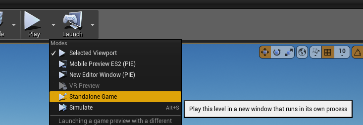

When working on holodeck or holodeck-engine, you may be wondering how to
debug your code.
Modifying holodeck package
If you are just modifying the Python package, you just need to make sure that there is a compatible package installed in the Holodeck search path.
Working off of master
If you are building off of master, you should be able to just use the binaries
we provide with (holodeck.install) as long as you don't make any breaking
changes.
Working off of develop
We don't provide builds of develop so you will need to build the engine
yourself (Building Holodeck Engine).
After you can build it, package it and place it in the install directory.
After following those instructions, you should be able to call holodeck.make.
Modifying holodeck-engine
Working on the engine is trickier. You can build it and place it in the expected directory, as above, but that's slow and annoying, and you can't attach a debugger.
The crux of both of the following methods is that the engine must have a client attach for it in order for it to tick (ie advance the state and parse input).
If you've read and understood Holodeck Communication Protocol , the reason for this should make sense.
Launch From the Unreal Editor
If you want to debug a particular level you have open in the editor, from the
- Launch game
From the toolbar above the viewport select the down arrow next to Play -> Standalone Game

.Running in its own process means that if the engine crashes or the client disconnects, the editor won't lock up or crash.
- Attach Client
Launch from Visual Studio
Make sure you have cooked content before attempting this.
- Optional: Select Level
If you want to launch a particular level:
- Go to Debug Menu -> Holodeck Properties -> Debugging
- In "Command Arguments", put the name of the level to load
-
OK
-
Launch the game from Visual Studio (play button, make sure DebugGame is selected)

- Attach Client
Attaching Client
Once you have the engine running, you need to attach a client to it. This is
most easily done by creating your own HolodeckEnvironment
object.
env = HolodeckEnvironment(
start_world=False
)
This attaches because the default UUID for both HolodeckEnvironent and the
engine (if --HolodeckUUID= is not provided on the engine's command line) is
"" or the empty string.
After that object is created, you should be able to call env.tick(5000) and
move the camera around.
If you want to spawn agents and sensors, provide a scenario configuration dict
to the scenario option in the constructor for HolodeckEnvironment (see
Scenarios)